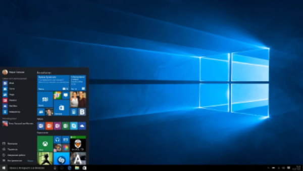
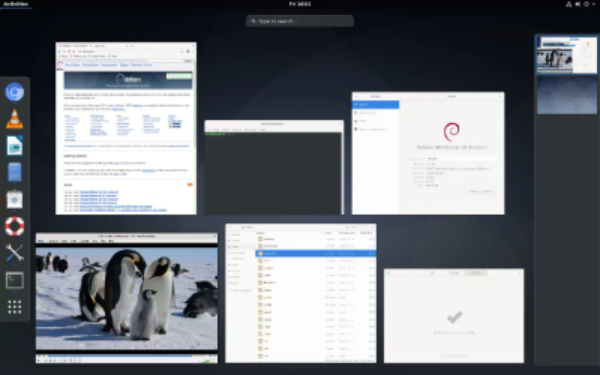
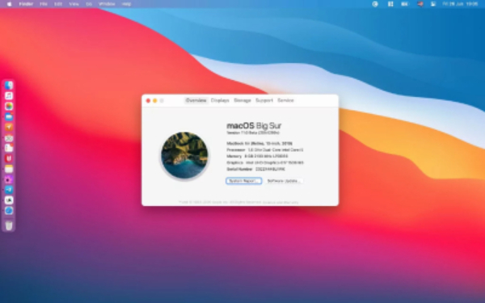

Операционные системы
Операционная система (ОС) – представляет собой основу любого компьютера, это комплекс программ, решающих 2 важные задачи: интерфейса между устройствами вычислительной системы и прикладными программами. управления устройствами и рабочими процессами, эффективно распределяя системные ресурсы.
Рассмотрим несколько ОС:
Windows

Предназначение: приложения, интернет-серфинг, персональное использование, игры.
Стоимость: от 199 долларов за Home до 289 долларов за Pro.
Веб-сайт: Microsoft.
Начиная с Windows 95 и заканчивая Windows 10 — именно операционная система Microsoft считается самой популярной и наиболее знакомой простым пользователям из разных уголков мира. Программное обеспечение компании остается основой современных компьютеров. Его выбирают из-за простоты использования, быстрого запуска и возобновления работы. Последние версии операционной системы отличаются повышенной безопасностью и вниманием к конфиденциальности пользователей. С ней вы и ваши данные находятся под надежной защитой, и особенно переживать за свое личное пространство не приходится.
Особенности:
- удобный пользовательский интерфейс с простой навигацией, меню «Пуск» , в котором собраны ключевые настройки системы, а также установленные приложения;
- простое одновременное использование нескольких рабочих пространств с открытыми окнами приложений;
- специальный режим для использования на устройствах с сенсорным экраном;
- технологии многофакторной аутентификации для повышения безопасности, распознавания отпечатков пальцев и лиц;
- автоматическое уменьшение размера файлов для уменьшения места, используемого в хранилище.
Вывод: Windows считается одной из лучших операционных систем, потому что она развивается продолжительное время. У нее современная система безопасности, а также простой пользовательский интерфейс, который подходит для самых разнообразных устройств.
Debian

Предназначение: разработка приложений.
Стоимость: бесплатно.
Веб-сайт: Debian.
Еще одна бесплатная операционная система с открытым кодом, созданная на базе Linux. Она отличается максимальной легкостью для аппаратного обеспечения, простотой установки, удобным интерфейсом, а также десятками тысяч предварительно скомпилированных приложений в удобном формате.
Особенности:
- высокая скорость работы вне зависимости от «железа»;
- встроенный брандмауэр для защиты данных;
- максимально простая установка;
- расширенные возможности для работы с сетью.
Вывод: от других операционных систем Debian отличается куда меньшей универсальностью, поэтому устанавливать ее нужно лишь в том случае, если у вас есть представление по поводу ее возможностей. Тем не менее, она абсолютно бесплатна, поэтому ничего не мешает попробовать.
MacOS

Предназначение: эксклюзивные приложения Apple.
Стоимость: бесплатно с устройствами Apple.
Веб-сайт: Apple.
Эксклюзивная операционная система Apple, у которой свой путь развития. Ее нельзя полноценно установить ни на одно другое устройство, кроме Mac. Она заточена под конкретное железо, которое использует производитель, и работает на нем максимально гладко. Для macOS подходит только программное обеспечение, которое создано конкретно для этой платформы. За операционную систему не нужно платить — ее стоимость уже вложена в цену далеко не самого дешевого аппаратного обеспечения. На WWDC 2020 Apple объявила о переводе macOS на процессоры собственного производства на базе архитектуры ARM.
Особенности:
- ночная тема оформления интерфейса операционной системы, которая делает работу с ней в вечернее время суток более комфортной;
- возможности для автоматического упорядочивания файлов по типу, дате изменения и другим параметрам;
- тесная интеграция с другими устройствами Apple — к примеру, можно быстро вставить в документ фрагмент, который вы только что сфотографировали на iPhone;
- фирменный магазин приложений с программным обеспечением;
- максимальный уровень безопасности и конфиденциальности данных.
Вывод: Это — одна из наиболее привлекательных операционных систем в визуальном плане. Так как компания развивает программное и аппаратное обеспечение одновременно, она может добиться максимального уровня оптимизации. Эту систему могут полноценно использовать только владельцы Mac.